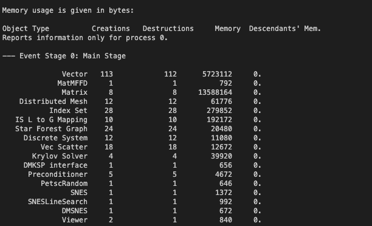
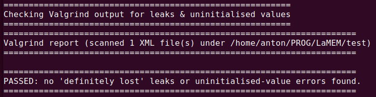
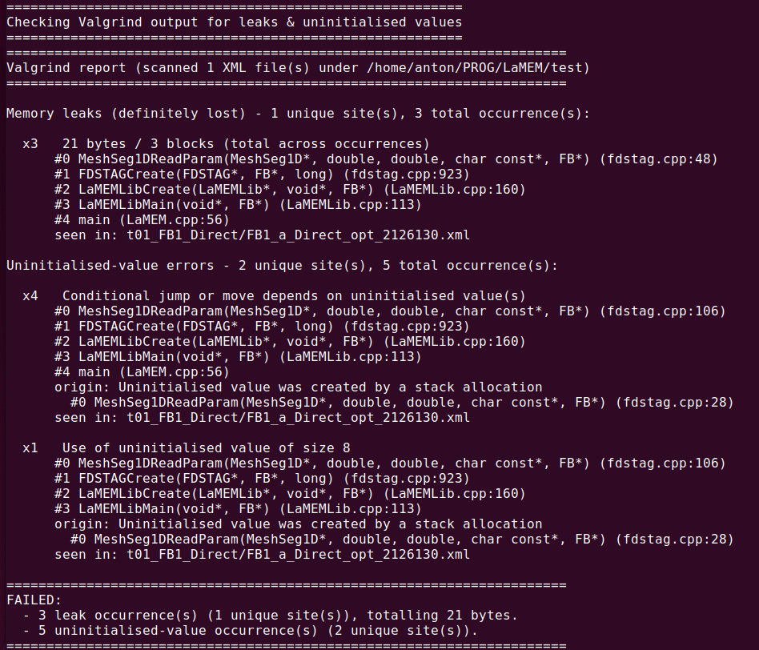

[TOC]
6. LaMEM Development Guide
In general, we try to follow much of the guidelines that PETSc has in place, even when we are somewhat less strict on some topics. Please have a look here, for more detailed info.
6.1 Integration branches
6.1.1 master
The master branch contains all features and bug fixes that are believed to be stable. New feature branches should start from master. Note that we do not have LaMEM release versions yet, but will introduce them once we find time to come up with a more decent documentation of LaMEM.
6.2 Adding new features to LaMEM using git
Most external users of LaMEM do not have writing access rights to LaMEM, to prevent mistakes from happening. Yet you can still contribute code in a rather straightforward manner, by using forking. An overall description of what forking does is given here. Below, we give specific instructions.
6.2.1. Fork LaMEM
What forking does is create a copy of LaMEM within your own GitHub account on which you can do your own work, create branches etc. (or also give other access if you wish). Once you are ready to push a local branch back to LaMEM master, you can create a pull request.
In order to fork, please follow the following steps.
Login to your GitHub account and go from there to the LaMEM repository.
Click on the Fork button in the toolbar. You can make this repo private or public.
Next, you clone LaMEM from your own repository to your local directory. The easiest way to do this is via the webpage where you go to Clone and copy the clone command. Next go to your terminal and type this:
git clone https://github.com/<username>/LaMEM.git ./LaMEMwhere <username> should be your GitHub username (or copy the command from the web interface).
Change to the directory:
cd ./LaMEMLink the open-source main version of LaMEM (also called upstream version) with your local copy of it by typing on the command-line:
git remote add upstream https://github.com/UniMainzGeo/LaMEM.gitYou can now always get the latest changes of the main version of LaMEM into your local copy by typing:
git pull upstream master 6.2.2 Work on a new feature
If you want to introduce a new feature to the code, you should always create a new branch for that.
The workflow is as follows:
Make sure you start from your local master by going to your local directory and typing
git checkout masterAlternatively, you can also push a button in the GUI (which is what we tend to do). Many of us use SourceTree which is provided by Atlassian.
Download the main changes of LaMEM into your own copy of the code:
git pull upstream masterCreate and switch to a new feature branch:
git checkout -b <loginname>/<goal>-<short-description>here goal should be either bugfix or feature to clarify whether it is to fix a bug or to add a new feature to the code.
For example, the new feature branch of Andrea on passive tracers should be called (use lowercase):
git checkout -b andrea_piccolo/feature-passive_tracers Now you are ready to implememt your changes in the new branch.
6.2.3 Format source code
If you plan to merge your contributions to master it is mandatory to apply automated formatting using Artistic Style astyle tool.
The astyle executable can be installed on Linux (e.g. Ubuntu) as folows:
sudo apt-get install astyleand on Mac, using Homebrew:
brew install astyleThe formatting options are described in the hidden file .astylerc which is located in the source directory. Please do not modify this file, since otherwise LaMEM coding style will be broken.
Different astyle versions format the code differently, so LaMEM pins the version to astyle 3.1 (the one shipped with Ubuntu 22.04/24.04 and used by the CI). This is set by the ASTYLE_VERSION variable in src/Makefile, and both make format and make checkformat refuse to run with a different version, rather than silently reformatting files you never touched.
Note that Homebrew currently installs a much newer astyle (3.6.x), which is not compatible. If astyle --version does not report 3.1, download and build it from sourceforge and put that binary first on your PATH.
To perform formatting of your changes you can simply use the format target from Makefile in LaMEM/src directory:
make formatApply the formatting regularly and modify the source if you are dissatisfied with the result. Below is a couple of tips.
If you want to keep if-else statement on the the same line do not use curly brackets, otherwise formatter will put else statement on the next line:
if(xp > xc) II = I; else II = I-1;Curly brackets are necessary to keep good formatting of a macro after if statement:
if(fi && fj ) { SET_EDGE_CORNER(lCenter, k, J, I, k, j, i, pmdof) }This is how you can nicely split long conditional or computational statement:
if(X[0] < bx || X[0] > ex ||
X[1] < by || X[1] > ey ||
X[2] < bz || X[2] > ez) numNonLocal++;To make sure that your formatting follows the rules you can use the following target of the Makefile in LaMEM/src directory:
make checkformatIf everything is fine you will see the following message:
Checking source formatting ...
All source files are properly formatted.
Otherwise the target will fail with a list of the files that require modifications:
Checking source formatting ...
.............................................
ERROR: source files are not properly formatted.
Formatted /home/anton/PROG/LaMEM/src/fdstag.cpp
Run 'make format' locally and commit the changes.
.............................................
make: *** [Makefile:150: checkformat] Error 1
Note that continuous integration will also check source code formatting for your pull request. Passing these checks is a necessary prerequisite for merging the pull requests.
To simplify the workflow you can directly invoke code formatting target every time you build the code. You can just program the following build command in your IDE:
make mode=deb format all6.2.4 Check PETSc Get/Restore Array pairing
LaMEM, like PETSc itself, requires that every VecGetArray() call (and its Read/Write variants, plus the DMDAVecGetArray*/DMDAVecGetArrayDOF* family) is matched by the corresponding VecRestoreArray()/DMDAVecRestoreArray*() call within the same function. A missing Restore call is a common source of subtle bugs and is easy to miss in review, so it is good practice to check for this before submitting a pull request.
To catch these automatically, run the following target of the Makefile in LaMEM/src directory:
make checkgetrestoreThis runs scripts/petsc_getrestore_check.jl, a lightweight static scanner that pairs Get/Restore calls per function and reports any that are unmatched. It requires a working julia installation on your PATH.
If everything is paired correctly you will see:
Checking PETSc Get/Restore Array pairing ...
0 potential mismatch(es) found.Otherwise it lists every offending call together with its file and line number, e.g.:
Checking PETSc Get/Restore Array pairing ...
../src/fdstag.cpp:412: VecGetArray() never matched by a Restore call
../src/fdstag.cpp:498: VecRestoreArray() with no matching preceding Get call
2 potential mismatch(es) found.Note that this is a lexical scanner rather than a full C parser: it does not understand preprocessor branching (#ifdef), so a Get/Restore pair split across mutually-exclusive #ifdef branches will be (falsely) reported as unmatched. Review any flagged case manually before assuming it is a real bug.
Running make check (without a specific sub-target) executes both checkformat and checkgetrestore together.
6.2.5 Commit and push changes
Inspect changes:
git statusor use one of the GUI's to do this
Regularly commit code:
- Commit all files changed:
git commit -aor - Commit selected files:
git commit file1 file2 file1or - Add new files to be committed:
git add file1 file2followed bygit commit. Modified files can be added to a commit in the same way. - The same can of course be done through the GUI.
- It is important to do this frequently and add useful commit messages as
Push the feature branch from your local hard disk to your online GitHub account, such that others (with access) can see it: git push -u origin andrea_piccolo/feature-passive_tracers (or equivalently, git push --set-upstream origin andrea_piccolo/feature-passive_tracers). Note that this step will still be in your own fork of LaMEM, and not in the main version of LaMEM.
On a regular basis: merge master back into your feature or bug fix branch. This is easiest done with SourceTree. On a regular basis you should also pull the latest updates of the main LaMEM into your forked repository.
Once your branch is ready and you would like to push it back to the main version of LaMEM, you should create a Pull Request, as described below.
6.2.6 Switch between branches
- Switch:
git checkout <branchname>, for examplegit checkout boris/feature-add_phase_transitions - Show local and remote-tracking branches:
git branch -a - Show available remotes:
git remote -v - Show all branches available on remote:
git ls-remote. Usegit remote show originfor a complete summary. - Delete local branch:
git branch -d <branchname>(only after merge to master is complete) - Delete remote branch:
git push origin :<branchname>(mind the colon in front of the branch name)
6.3 Contributing workflows
Note that LaMEM is an open-source code, distributed under the terms of MIT License. Although this license is permissive, we still highly encourage you to contribute changes you made to the code back to LaMEM repository. By pushing back your contributions to master other users can benefit from your additions. If the additions are part of a paper that you would like to be cited, feel free to add the reference in the source code. The LaMEM development team will make sure that things in master work and that tests will keep on running. By adding appropriate tests for your features it will also work in some time from now. Our experience shows that if you don't do this, or wait too long to push changes back to master, you will find that it becomes increasingly difficult to keep your branch in line with LaMEM/master.
6.3.1 Maintain granularity
If your contribution can be logically decomposed into 2 or more separate contributions, submit them in sequence with different branches instead of all at once. That makes it much easier to detect and resolve issues.
6.3.2 Use test framework
Include tests which cover any changes to the source code. Create a new directory for these tests within LaMEM/test and add the test itself to runtests.jl. You will have to create a Julia script for each new test directory, and will have to add *.expected files. Please make sure that these tests run reasonably fast, as it will otherwise significantly slow down the full testing framework (in most cases it is sufficient to have a low resolution case for testing). You can most likely get inspiration by looking at the existing examples.
Run the full test suite on your machine – i.e. make test in the LaMEM/test directory before a pull request. All tests should pass; if not ensure that.
6.3.2.1 Test targets
Test framework supports different targets that control what is going to be done and what happens with generated and expected files:
make test # run tests, clean up generated files
make work # run tests, keep generated files for inspection
make update # run tests and OVERWRITE the expected (reference) files
make grind # run tests under Valgrind, analyze .xml files and report errors
make report # analyze existing Valgrind .xml files and report errors
make check # run tests and check match between creations/destructions of PETSc objects
make clean # remove output files (e.g. .xml) make update prints a warning banner before running, since it overwrites the reference files used to judge pass/fail in future runs.
6.3.2.2 Test selectors
By default test, work, update, and grind targets run the full test suite. You can restrict a run to specific numbered testsets (t01_..., t02_..., etc.) by passing test numbers and/or ranges after the target:
make test 03-07 11 12-17 # run tests t03-t07, t11, and t12-t17
make work 01 05 32 # run only t01, t05, t32, keep output for inspection
make update 05 12-15 # regenerate expected files for t05, t12-t15 only
make grind 07 # report memory errors for t07Numbers can be zero-padded or not (01 and 1 are equivalent). Ranges are inclusive and order-independent (07-03 also works). If no selectors are given, all tests run.
Selection applies at the test set level only; individual sub-tests within a test set cannot be selected individually. If finer granularity is needed, split the test set into multiple numbered test sets.
Combining test selectors and test targets provides a flexible way to develop a new test without interfering much with the rest of the test suite in runtests.jl. However as we mentioned before, after completing the new test it is mandatory to run the entire suite to make sure that other tests are not affected by your changes.
6.3.3 Deal with compiler warnings
Make sure that there are NO compiler warnings left if you compile a fresh version of LaMEM with make mode=deb clean_all; make mode=deb all. Do the same on a different machine (e.g., Linux, Mac etc.) if it is available to you. Sometimes things work on one machine but not on the other.
6.3.4 Update reference input file
If your additions resulted in new input parameters to the input script, add these new options (with a brief explanation of their meaning) to the input master file LaMEM/info/options/input_file.dat. Note that the nomenclature of the new parameters must be unique and case-independent. It is thus not allowed to call a parameter K, since we already have thermal conductivity k. The reason for this is that new parameters are automatically part of the adjoint inversion framework which otherwise gets confused. New parameters should also have a clearly recognizable name (so everything related to your new plume inflow boundary condition should be called something like Plume_). Note that any new parameter in the input file can also automatically be called/overruled from the command line.
6.3.5 Trace memory allocations
Make sure that you have no memory leaks. That means that every vector/matrix/dm you created should also be destroyed with VecDestroy, etc. In addition, if you happen to allocate memory yourself (with PetscMalloc) you must make sure that you free the memory again (using PetscFree). A simple way to check that you are fine with the PETSc objects is to use internal logging system which usually produces the following outputs:

The number of creations must be the same as the number of destruction. If there is a mismatch, you likely forgot to do a Destroy somewhere. Note that it is more difficult to track down PetscMalloc statements without corresponding PetscFree. Doing that is important as otherwise the memory of a simulation will go up with every time step, which ultimately makes the simulations run out of memory. To activate the logging simply run your test with the -log_view option added in the end.
This check is also fully integrated into the test framework. Run the following command in the LaMEM/test directory:
make check(Note this is a different target from the make check described above, which is run from the LaMEM source root rather than test and checks source formatting and PETSc Get/Restore Array pairing.)
make check runs the entire test suite with -log_view automatically appended to every test. Instead of the usual numeric comparison against the expected files, each test instead fails if any PETSc object type reports a different number of Creations than Destructions, e.g.:
LEAK SUSPECTED in FB1_a_Direct_opt.out (Creations != Destructions):
Object Type | Creations | Destructions
Vector | 258 | 255As with the other test targets, you can use test selectors to narrow this down, e.g. make check 07. Because the check happens right after each test runs, there is no separate report step and no leftover files to clean up afterwards - pass/fail for every test shows up in the usual test summary at the end of the run, just like make test.
6.3.6 Use Valgrind
You can also use a very powerful memory inspection tool Valgrind to identify all potential memory leaks and uninitialized variables. Valgrind is only available on Linux (e.g. Ubuntu) and can be installed with this command:
sudo apt-get install valgrindRunning LaMEM under Valgrind can be most easily done via the test framework, since it is fully integrated with Valgrind. To perform the checks and obtain the report for all LaMEM tests run the following command in the test directory:
make grindOf course you can use test selectors to narrow down your scope to a particular test, e.g.:
make grind 26This option is extremely useful since Valgrind runs are prohibitively expensive.
If everything runs fine the following statement will be printed:

Otherwise you will see something like this:

The test framework will merge multiple errors triggered by the same line of code and will only report it ones. This will drastically reduce the amount of text output and will let you focus on the actual problem. The error messages are also limited to LaMEM source files, since the main goal is debugging LaMEM, not the external libraries. Please also prepare that Valgrind runs will take much longer (up to 100 times) to complete compared to normal runs. Valgrind runs will always use debug version in the background regardless of what optimization type is requested in the test (deb or opt). Numerical comparison of the output with the expected results will be also skipped. Because of that all test will be flagged as passed under Valgrind mode, unless they trigger a real error (e.g. iteration overflow, access violation). The memory and variable check summary will appear after all tests complete execution. Since Valgrind runs are very expensive the test framework will only delete .xml files if all tests complete without errors and no memory and initialization issues are found. If either of this requirements is not met all .xml files will remain in the test directories for further review. To facilitate repeated evaluation test framework provides additional target to print the Valgrind report from the existing output:
make reportFinally when all issues are addressed .xml files can be deleted with the following command:
make clean6.3.7 Initiate pull request
Once you are ready to push back your branch to the main version of LaMEM, you should create a pull request. Creating a pull request is best done through the GitHub web page:
- Go to your own GitHub account and the forked version of LaMEM.
- Select
brancheson the left side and select the branch. - On the right side you will have the option
Create Pull Request - Click on that, and select as destination on the right
UniMainzGeo/LaMEMandmaster - Create a title and a description of what the pull request is about
- Select Anton and Boris as reviewers
- And push
Create Pull Request - We will review an email and at least one of us has to approve the pull request. If you want others to look at it as well, add them at this stage. They will all receive an email if the PR is created and if changes are made to the PR.
- We will go over the code, test it ourselves, and in most cases make suggestions for changes. These can be incorporated into your branch by committing changes in the usual manner. - Once approved, it will be merged to
masterand your branch will be closed. The tests will ensure that the new features will keep working.